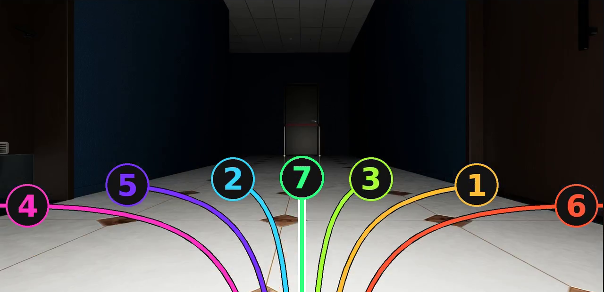
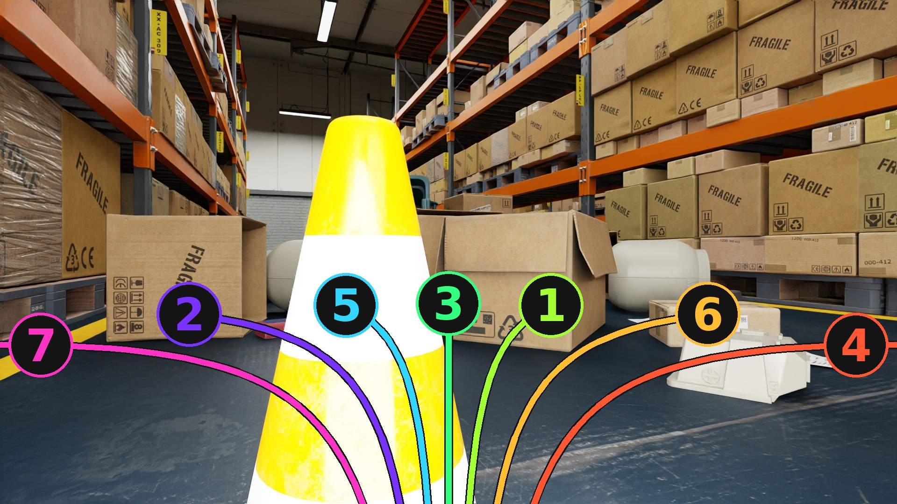
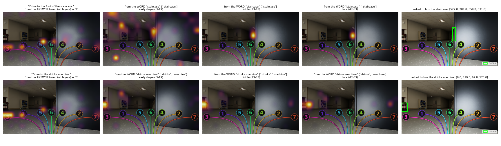
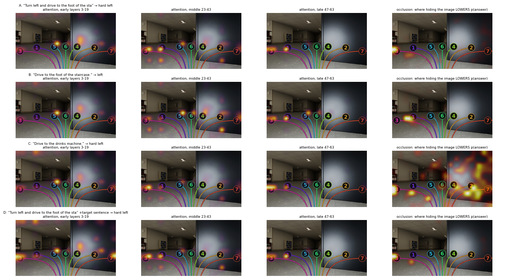

MIDI 2026 · accepted
A frozen vision-language model drives a simulated AlohaMini robot from a typed sentence. It is never asked for coordinates: seven candidate paths are drawn on its own camera image, and it answers with a number. No training, no robot data, no goal coordinate.
The idea
A navigation model fine-tuned on robot data largely ignored “left” versus “right”. A large general model understands the sentence perfectly, but writes poor coordinates. So QVLA never asks for coordinates.
Seven arcs of known curvature, each 3 m long, are projected onto the robot's camera image and numbered in a new random order at every decision.
First call: what blocks the way, which side is open, and how far away the target is.
Second call: the model answers with one number. A classical controller drives that path, with a collision guard and a contact layer for safety.
Frozen Qwen3.8-27B · nothing trained · about 2.1 s per decision · NVIDIA Isaac Sim 6.0.1 · DynaNav benchmark

Four scenes
Each video is a full run in real time. Left: what the model sees, with the chosen path outlined. Right: a camera behind the robot. Underneath: the model's own description and its choice. Nothing was changed between scenes.
Results
Every policy ran the thirteen indoor DynaNav episodes three times, on the same simulated AlohaMini with the same controller and safety layers. Goals reached per round, out of 13.
Statistically about the same, but QVLA needs no training and no robot data.
Drawing the paths gives three times as many goals (p = 0.004): better on 9 episodes, worse on none.
“Left” versus “right” moves QVLA's path by 102°; TIC-VLA's moves by at most 36°.
Visual vs text
Same model, same description step, same seven paths and the same shuffled numbers; only the way the paths are shown changes.

16% of decisions with text vs 7% with the drawing; in front of the vending machine 41% vs 0%.
Sharp turns in 2% of decisions with text vs 14% with the drawn paths.
Without the drawing it cannot see whether a path clears the obstacle in front of it.
Long-horizon task
A human in the loop: each instruction is typed only after the robot arrives, and the next one starts wherever it stopped. The person can step in with a new sentence at any time.
On the first try, after “turn left” the robot chose hard left 52 times in a row and turned 1001°: the model only knew which words it had chosen, not how far it had actually turned. Now every decision also gets the robot's own odometry: how far it has turned since the instruction, where the target was last seen, and a guard that removes the sharp turns after a full circle. Step 3 then turned 82° and drove straight to the stairs.
Before the fix the same tour needed two human corrections. One run, so read it as a demonstration, not a rate.
Attention
When it writes the number, most of the glow sits on the number badges, and only about a quarter of its attention goes to the image at all. The rest goes to the text: the instruction and its own description.
Measured from the word “staircase” in the instruction instead, the middle and late layers light up one spot exactly on the stairs, and asked for a bounding box the model boxes the stairs. The object is grounded in the word; the answer then reads from the word.
Told to drive to the drinks machine, seen side-on as a plain black panel, the model grounded the words on a medical cart at the far left, boxed the cart, and turned hard left: consistent with what it believed, not an ignored instruction.


Humanoid
Only the camera changes: the paths are drawn with the live pose of the head camera, which moves while it walks.
A learned walking controller follows the speed and turn that QVLA commands.
Vending machine, elevator and wheelchairs reached; one long hallway timed out.
Trade-offs
The robot
A three-wheel omni base with a vertical lift and two SO-101 arms, simulated in NVIDIA Isaac Sim 6.0.1 with full rigid-body physics, built from the real URDF and meshes of liyiteng/alohamini (Apache-2.0). The same robot is a manipulator too, driven from a terminal or a gamepad.
Architecture · Navigation · Real hardware · Attention results